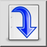
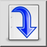
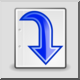
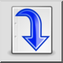

Infoga block
Verktygsfält / ikon:
 

Meny: Block > Infoga block
Genväg: B, I
Kommandon: blockinsert | minsert | insert | bi
Detta är en automatisk översättning.
Verktygsfält / ikon:
 

Meny: Block > Infoga block
Genväg: B, I
Kommandon: blockinsert | minsert | insert | bi
Det här verktyget infogar det aktiva blocket i ritningen. En eller flera blockreferenser skapas i ritningen för att representera det aktiva blocket.